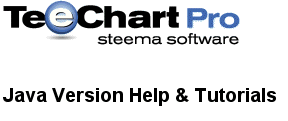

|
© 1996-2012 Steema Software SL. All rights reserved.
|
 |
목차 이전 | 다음 |
줌과 스크롤은 빽빽하게 채워진 차트 안에서 특정한 데이터에 촛점을 맞추는 데 유용한 도우미입니다. ''Animated Zoom'과 ' Scrolling' 폴더 안에 있는 비주얼 베이직 예제를 참고하십시오.
| Contents |
마우스 이용하여 줌과 스크롤하기 (How to Zoom and Scroll using the Mouse)코드를 이용하여 줌과 스크롤하기 (How to Zoom and Scroll by code)
줌(Zoom) |
차트에서 줌을 하기 위해서는,줌 하고자 하는 영역의 왼쪽 위 코너에서 마우스 오른쪽 버튼 을 누르고 나서 마우스 버튼을 누른 채로 줌 하고자 하는 영역의 오른쪽 아래 코너로 드래그를 하여 사각형을 만듭니다. 마우스 버튼에서 손을 떼면 선택된 영역으로 차트가 다시 그려집니다.
줌 한 것을 취소하고자 하면, 왼쪽 마우스 버튼을 차트 영역 아무곳에서나 누르고 마우스 버튼이 눌린 상태로 왼쪽 위로 드래그를 합니다. 버튼에서 손을 떼면 차트는 본래 정의된 차트 영역에서 다시 그려집니다.
차트를 가로질러 스크롤 하기 위해서는, 마우스 왼쪽 버튼 and, 을 누르고 버튼이 눌려진 상태로 마우스를 차트를 스크롤 하고자 하는 방향으로 드래그합니다. 마우스 버튼에서 손을 떼면 차트는 새로운 장소에 남아있게 됩니다.
스크롤을 취소하고자 하면, 마우스 왼쪽 버튼을 누르고 차트 영역 아무곳에서나 누르고 마우스 버튼이 눌린 상태로 왼쪽 위로 드래그를 합니다. 버튼을 누르고 나면 차트는 본래 정의된 차트 영역에서 다시 그려집니다.
줌은 기본값에 의해 사용이 가능합니다 Zoom.getAllow 속성을 사용하면 줌을 사용할 수 없게 만들 수 있습니다.
줌과 관련된 속성과 메소드의 전체 리스트를 위해 줌 인터페이스를 보십시오. 줌을 할 사각형 영역을 정의하기 위해서는 ZoomRect 메소드를 사용합니다.
예제
tChart1.getZoom().zoomRect(new com.steema.teechart.Rectangle(100,100,120,120));
ZoomRect 코디네이트는 차트 패널의 왼쪽 위 포인트가 0,0인 스크린 픽셀에서 정의됩니다. 다음의 코드는 x축의 2번째와 5번째 사이의 영역에서, y축을 전체 차트의 최소와 최대 스케일로 세팅해 놓고 줌 인 하게 됩니다:
int x = points1.calcXPos(2); int y = tChart1.getAxes().getLeft().calcYPosValue(tChart1.getAxes().getLeft().getMaxYValue()); int height = tChart1.getAxes().getLeft().calcYPosValue(tChart1.getAxes().getLeft().getMinYValue()) - tChart1.getAxes().getLeft().calcYPosValue(tChart1.getAxes().getLeft().getMaxYValue()); int width = points1.calcXPos(5) - x; com.steema.teechart.Rectangle r = new com.steema.teechart.Rectangle(x,y,width,height); tChart1.getZoom().zoomRect(r);
줌을 취소하기 위해서는 'Undo (실행취소)'를 사용하십시오.
tChart1.getZoom().undo();
애니메이트 된 줌은 단계적인 줌을 제공합니다. '줌 인'에서 '줌 아웃' 로 한번에 뛰어가는 대신에 AnimatedZoom을 세팅하면 줌이 되기까지 엇갈린 단계들을 정의할 수 있게 됩니다. 한번 AnimatedZoom이 가능해지면 마우스나 코드를 이용하여 수동으로 줌할 수 있습니다.
예제
int x = points1.calcXPos(2);
int y = tChart1.getAxes().getLeft().calcYPosValue(tChart1.getAxes().getLeft().getMaxYValue());
int height = tChart1.getAxes().getLeft().calcYPosValue(tChart1.getAxes().getLeft().getMinYValue()) -
tChart1.getAxes().getLeft().calcYPosValue(tChart1.getAxes().getLeft().getMaxYValue());
int width = points1.calcXPos(5) - x;
com.steema.teechart.Rectangle r = new com.steema.teechart.Rectangle(x,y,width,height);
tChart1.getZoom().setAnimated(true);
tChart1.getZoom().setAnimatedSteps(100);
tChart1.getZoom().zoomRect(r);
줌은 수동으로나 아니면 코드에 의해서, TChart.OnZoom 이벤트를 유발시킵니다. 줌 아웃은 TChart.UndoZoom 이벤트를 유발시킵니다.
스크롤은 기본값으로 모든 방향에서 가능합니다. Scroll.Enable 속성을 이용하면 스크롤을 사용하지 않게 되거나 또는 한 방향으로만 스크롤을 제한합니다. 코드에 의한 가장 쉬운 스크롤 방법은 다음과 같이 Axis Scroll (축 스크롤) 메소드를 사용하는 것입니다. :
예제
tChart2.getAxes().getBottom().scroll(3, false);
스크롤 기능을 중지한 상태입니다. 'False'를 시리즈 값에 제한하면 티차트에서 스크롤링을 허랄할지 안할건지를 위임합니다.
스크롤을 컨트롤 하는 또다른 방법은 코드에 의해서 축 최대와 최소를 스크롤 하도록 정의하는 것입니다:
예제
private void Load() {
int range = com.steema.teechart.Utils.Round((bar1.getXValues().getMaximum() - bar1.getXValues().getMinimum() / 2));
bar1.fillSampleValues(20);
tChart1.getPanning().setAllow(ScrollModes.NONE);
jScrollBar1.setValue(range);
jScrollBar1.setMinimum(range - 50);
jScrollBar1.setMaximum(range + 50);
}
public void jScrollBar1_propertyChange(PropertyChangeEvent evt) {
tChart1.getAxes().getBottom().setAutomatic(false);
tChart1.getAxes().getBottom().setMinimum(jScrollBar1.getValue());
tChart1.getAxes().getBottom().setMaximum(jScrollBar1.getValue() + bar1.getCount());
}
|
|